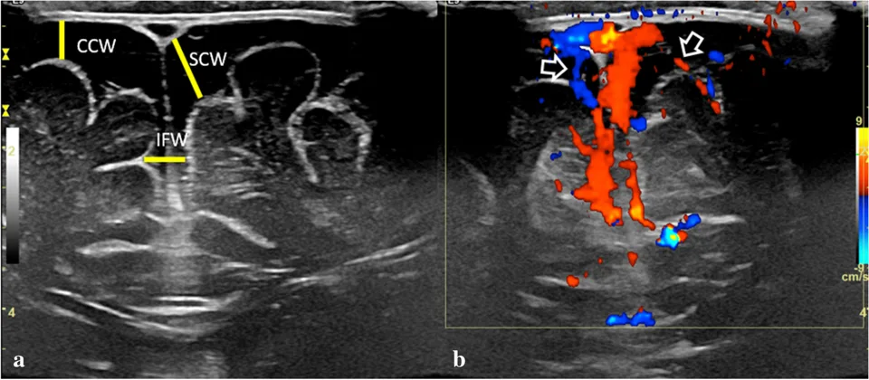

DX.2 — Élargissement bénin des espaces sous-arachnoïdiens du nourrisson : monographie
Le nourrisson dont la tête grossit vite vers 6 mois, avec une fontanelle souple et un développement normal, présente le plus souvent un élargissement bénin des espaces sous-arachnoïdiensS8S9. Le médecin pose ce diagnostic seulement après avoir écarté l’hypertension intracrânienne, l’hydrocéphalie et la collection sous-durale, puis il suit la courbe jusqu’à la stabilisationS6S9.
Monographie DX.2 établie à partir des sources citées ; non validée cliniquement par un médecin.
1. Définition
L’élargissement bénin des espaces sous-arachnoïdiens du nourrisson se définit par un périmètre crânien (PC) augmenté ou en augmentation, avec un espace sous-arachnoïdien élargi à l’imagerie et sans autre cause expliquant la macrocéphalieS9. Les auteurs anglophones le nomment benign enlargement of the subarachnoid spaces (BESS), et plusieurs synonymes anciens, dont « hydrocéphalie externe bénigne », désignent la même entitéS9.
2. Épidémiologie (Suisse, puis Europe)
En Suisse, pédiatrie suisse recommande depuis le 15 juin 2026 des courbes de croissance nationales, qui servent désormais à situer le PC du nourrissonS2. Les sources suisses lues ne chiffrent pas la fréquence de l’élargissement bénin ; les chiffres européens fixent donc l’ordre de grandeurS2S9.
Chiffres européens lus : fréquence, sexe, famille
| Indicateur | Valeur | Population ou méthode | Source |
|---|---|---|---|
| Incidence | 0,4 pour 1000 naissances vivantes (intervalle de confiance à 95 % : 0,34 à 0,46) | Étude de population norvégienne citée par la revue | S9 |
| Incidence estimée | 0,5 pour 1000 naissances vivantes | Revue italienne, portugaise et canadienne | S8 |
| Rang parmi les causes | Cause la plus fréquente de macrocéphalie du nourrisson | Revue diagnostique | S8 |
| Sexe | Environ deux tiers de garçons | Revue norvégienne de 147 études | S10 |
| Parent proche macrocéphale | Environ 40 % ; jusqu’à 80 à 90 % dans deux séries | Revue norvégienne | S10 |
| Âge de présentation | De 3 à 12 mois, pic vers 7 mois | Revue de radiologie pédiatrique | S9 |
| Collection sous-durale associée | 128 enfants sur 1705, soit 7,5 % (extrêmes : 0 à 42,1 %) | Revue de 14 études | S9 |
Ces écarts d’incidence tiennent aux définitions et aux techniques d’imagerie, qui varient d’une série à l’autre ; cette lecture relève d’une déduction, car les revues ne l’écrivent pas ainsi.
La prédominance masculine se retrouve aussi dans l’hydrocéphalie, et la production de liquide cérébrospinal (LCR) plus élevée chez le garçon pourrait l’expliquer en partieS10. Le poids réel de ces chiffres dépend surtout de la qualité méthodologique, que la revue norvégienne juge limitée pour la majorité des étudesS10.
Limites des chiffres lus
| Limite | Conséquence pour le clinicien | Source |
|---|---|---|
| Aucun critère d’imagerie ni seuil établi pour poser le diagnostic | Le diagnostic reste clinico-radiologique et tient compte de la courbe | S9 |
| Majorité d’études de qualité méthodologique limitée | Les taux de retard de développement varient fortement selon les séries | S10 |
| Imageries anciennes moins précises | Certaines collections dites sous-arachnoïdiennes étaient peut-être sous-durales | S9 |
| Aucun chiffre suisse publié dans les sources lues | Les ordres de grandeur viennent de Norvège et de revues européennes | S2S9 |
3. Physiopathologie
Le LCR se forme dans les plexus choroïdes des ventricules, puis il gagne l’espace sous-arachnoïdien, qui en contient environ 80 % chez l’adulteS5. Chez le nourrisson, les granulations arachnoïdiennes restent immatures et le plexus vasculaire intradural est plus large, ce qui modifie la résorption du liquideS9.
La théorie la plus admise retient une immaturité des villosités arachnoïdiennes, incapables de résorber tout le LCR produit pendant la première annéeS8S10. Ces villosités achèvent souvent leur maturation vers 18 mois, ce qui coïncide avec la stabilisation du PCS8S10.
Les hypothèses complémentaires invoquent un déséquilibre physiologique entre croissance du crâne et croissance du cerveau, ou une gêne au retour veineuxS9. Le risque de saignement sous-dural découle de l’étirement des veines pontantes qui traversent un espace élargiS8S9.
Mécanismes proposés et ce qu’ils expliquent
| Mécanisme | Ce qu’il explique | Niveau de preuve | Source |
|---|---|---|---|
| Immaturité des villosités arachnoïdiennes | Accumulation de LCR puis arrêt vers 18 mois | Théorie la plus accréditée | S8S10 |
| Production de LCR accrue la première année | Début de la croissance céphalique vers 6 mois | Hypothèse des auteurs norvégiens | S10 |
| Déséquilibre entre croissance du crâne et du cerveau | Pic entre 3 mois et 1 an | Hypothèse | S9 |
| Congestion veineuse, hypoplasie des sinus transverses | Terme récent « subarachnomégalie avec congestion veineuse » | Angiographie par résonance magnétique dans certaines séries | S9 |
| Vaisseaux lymphatiques méningés | Part de la résorption du LCR | Études complémentaires nécessaires | S9 |
Pourquoi une collection sous-durale peut apparaître
Les veines pontantes traversent toute la largeur d’un espace sous-arachnoïdien élargi, si bien qu’un étirement excessif peut les rompreS8S9. Un modèle mathématique de la voûte soutient cette théorie, mais des suivis au long cours n’ont pas montré de risque accru d’hématomeS9.
| Argument | Sens | Source |
|---|---|---|
| Modèle mathématique de la voûte crânienne | En faveur d’une prédisposition | S9 |
| Lien entre profondeur de l’espace et collections | Controversé | S9 |
| Suivis longitudinaux et étude par éléments finis | Pas de risque accru d’hématome sous-dural | S9 |
| Collections volumineuses traumatiques | Peuvent elles-mêmes élargir secondairement les espaces | S9 |
Cette discordance explique pourquoi toute collection sous-durale impose un bilan de maltraitance, même lorsque l’élargissement bénin paraît évidentS9S3.
Liquide cérébrospinal : ventricules et espace autour du cerveau. Blausen Medical fournit cette illustration en couleurs sous licence CC BY 3.0S12.

Lisez d’abord seul ce schéma : suivez le liquide des ventricules latéraux vers le quatrième ventricule.
La copie annotée montre trois repères sur le trajet du liquide intraventriculaire.
- 1. Le repère 1 situe un ventricule latéral, qui reste normal ou à peine élargi dans l’élargissement béninS8S12.
- 2. Le repère 2 montre le troisième ventricule, qui peut s’élargir légèrement dans certaines sériesS8S12.
- 3. Le repère 3 montre la région du quatrième ventricule, d’où le liquide sort vers l’espace sous-arachnoïdienS5S12.
Ce que l’image décide. Un excès de liquide surtout frontal, sans dilatation ventriculaire franche, oriente vers l’élargissement bénin plutôt que vers une hydrocéphalie obstructiveS8S9.
Les nombreux synonymes entretiennent la confusion, car certains désignent en réalité l’espace sous-dural, distinct de l’espace sous-arachnoïdienS9.
Nomenclature : synonymes et faux amis
| Terme | Statut | Source |
|---|---|---|
| Hydrocéphalie familiale bénigne, hydrocéphalie externe bénigne | Synonymes de l’élargissement bénin | S9 |
| Hydrocéphalie externe idiopathique, pseudo-hydrocéphalie | Synonymes anciens | S9 |
| Élargissement bénin des espaces extra-axiaux, collections extracérébrales bénignes du nourrisson | Synonymes | S9 |
| Hydrocéphalie communicante bénigne, hydrocéphalie extraventriculaire | Synonymes | S9 |
| Hygroma sous-dural, épanchement sous-dural bénin | Faux amis : ils désignent l’espace sous-dural | S9 |
| Subarachnomégalie avec congestion veineuse du nourrisson | Terme récent, qui situe correctement le liquide | S9 |
Le terme « bénin » reste discuté, car une revue norvégienne conteste qu’aucun traitement ne soit jamais nécessaireS10.
4. Démarche diagnostique
La macrocéphalie correspond à un PC d’au moins 2 déviations standard (DS), et le médecin vérifie toujours cette valeur avant de conclureS11. La démarche commence par une mesure fiable : trois mesures consécutives au ruban de papier, la plus grande reportée sur une courbe standardisée corrigée pour l’âge gestationnelS6S7. Le médecin cherche ensuite les signes d’hypertension intracrânienne (HTIC), car ils imposent une orientation immédiateS6.
Un PC qui croise au moins deux lignes de centiles impose une évaluation pédiatrique et une imagerie crânienne, pour exclure une hydrocéphalie évolutiveS6. L’échographie transfontanellaire constitue l’examen initial lorsque la fontanelle reste ouverte, car elle n’exige ni sédation ni rayonnementS8.
La séquence diagnostique se déroule en cinq étapes, et le tableau des diagnostics à écarter précise ce qui distingue chaque piègeS6S8S9.
Séquence diagnostique en cinq étapes
| Étape | Geste | Seuil ou critère | Conduite | Source |
|---|---|---|---|---|
| 1. Mesurer | Trois mesures au ruban de papier, la plus grande retenue | Courbe standardisée, âge corrigé | Reporter sur la courbe nationale suisse | S7S2 |
| 2. Situer | Comparer au tracé antérieur | Croisement de deux lignes de centiles ou plus | Évaluation pédiatrique et imagerie | S6 |
| 3. Trier | Chercher HTIC et signe focal | Fontanelle tendue, regard en coucher de soleil, vomissements, paralysie du VI | Orientation immédiate | S6S11 |
| 4. Imager | Échographie transfontanellaire avec Doppler | Espace frontal élargi, vaisseaux qui le traversent | Imagerie par résonance magnétique (IRM) si doute, symptôme ou collection | S8S9 |
| 5. Suivre | PC et développement à chaque contrôle | Stabilisation parallèle au centile supérieur | Rassurer, puis réévaluer si la courbe dévie | S9S10 |
Diagnostics à écarter avant de conclure au bénin
| Diagnostic | Indice qui doit alerter | Examen qui tranche | Source |
|---|---|---|---|
| Hydrocéphalie (DX.3) | Signes d’HTIC, ventricules dilatés | Échographie ou IRM ; ventricules normaux ou peu dilatés dans le bénin | S8S6 |
| Hématome sous-dural (DX.4) | Membrane arachnoïdienne visible, vaisseaux refoulés contre le cortex | Doppler couleur, IRM avec séquences sensibles au sang | S9 |
| Macrocéphalie familiale (DX.1) | PC élevé mais stable, parent macrocéphale | Mesure des parents ; imagerie souvent inutile | S6S11 |
| Atrophie cérébrale | PC normal, petit ou en baisse avec espaces larges | Le diagnostic bénin ne s’envisage pas dans ce cas | S9 |
| Maladie métabolique ou génétique | Régression, organomégalie, dysmorphie, anomalie de la substance blanche | Bilan ciblé selon la revue diagnostique | S8 |
5. Anamnèse ciblée et drapeaux rouges
L’anamnèse retrace d’abord la courbe du PC depuis la naissance, puis elle demande le PC des parents et de la fratrie, car l’histoire familiale est fréquenteS11S10. Elle explore ensuite le développement moteur et langagier, puisque des retards transitoires surviennent chez une partie des enfantsS8S10.
Le médecin recherche activement les drapeaux rouges, car une collection sous-durale ou une maltraitance peut se cacher derrière une grosse têteS9S3. Il interroge enfin sur tout traumatisme, sur le délai de consultation et sur la cohérence du récit, qui comptent parmi les signaux d’alerteS9.
Questions ciblées et drapeaux rouges
| Question | Réponse rassurante | Drapeau rouge | Source |
|---|---|---|---|
| Le PC était-il déjà grand à la naissance ? | Normal ou grand, puis montée vers 6 mois | Montée brutale sans explication | S9S11 |
| Un parent a-t-il une grande tête ? | Oui, PC parental au-delà du 95e à 98e centile | Aucun antécédent et courbe qui s’emballe | S10S11 |
| L’enfant vomit-il, dort-il trop, est-il irritable ? | Non | Oui : signes d’HTIC | S8S11 |
| Le regard part-il vers le bas, louche-t-il soudain ? | Non | Coucher de soleil, paralysie du VI | S6S11 |
| A-t-il convulsé, fait une apnée, perdu connaissance ? | Non | Apnée et perte de connaissance ne sont pas décrites dans l’élargissement bénin | S9 |
| Y a-t-il eu un traumatisme, un retard à consulter, un récit changeant ? | Récit stable, consultation rapide | Signaux d’alerte de maltraitance | S9S3 |
| Les acquisitions régressent-elles ? | Non, progression régulière | Régression : réévaluation urgente | S8 |
Des signes isolés comme une brève crise de moins de 5 minutes, des pleurs ou une somnolence ne distinguent pas une maltraitance d’une collection spontanéeS9.
Les cas publiés montrent comment un même tableau de grosse tête conduit à des conclusions opposées selon les lésions associéesS9.
Quatre nourrissons publiés : même grosse tête, conclusions différentes
| Nourrisson publié | Tableau | Bilan | Conclusion des auteurs | Source |
|---|---|---|---|---|
| Garçon de 6 mois | Macrocéphalie, développement normal, deux parents macrocéphales | Échographie avec Doppler | Élargissement bénin | S9 |
| Garçon de 3 mois, ancien prématuré | Macrocéphalie progressive, développement normal, collection fortuite | IRM, fond d’œil, squelette, histoire sociale normaux | Collection dans le cadre d’un élargissement bénin | S9 |
| Garçon de 3,5 mois | Irritabilité, fontanelle bombante, hypertonie, PC au-delà du 97e centile | Membranes visibles, hématome de la fosse postérieure | Traumatisme infligé | S9 |
| Garçon de 7 mois, ancien prématuré | Macrocéphalie progressive, développement normal | Hémorragies rétiniennes, fractures multiples | Signalement aux autorités | S9 |
Le développement normal ne suffit donc pas à rassurer ; seul le bilan des lésions associées tranche entre ces situations, selon les auteursS9.
6. Examen physique ciblé, région par région
L’examen suit six régions, chacune dans sa propre fenêtre, car un seul signe hors norme fait sortir l’enfant du cadre béninS8S9. La fontanelle, les yeux, la peau, la neurologie et l’examen général complètent la têteS6S9S11.
Tête et voûte
| Élément | Technique | Interprétation | Source |
|---|---|---|---|
| PC | Trois mesures, la plus grande reportée | Au-delà de +2 DS, souvent au-delà du 90e à 98e centile | S7S9 |
| Forme | Bosses frontales et occipitales | Asymétrie ou crête suturale orientent vers une autre cause | S11 |
| Veines du cuir chevelu | Inspection | Veines apparentes : signe d’HTIC | S11 |
Le PC correspond au plus grand périmètre passant au-dessus des oreilles par les bosses frontales et occipitalesS11.
Fontanelle antérieure et sutures
| Élément | Technique | Interprétation | Source |
|---|---|---|---|
| Fontanelle | Palpation enfant calme, en position assise | Souple : rassurant ; tendue ou bombante : HTIC | S6S11 |
| Sutures | Palpation des bords | Disjonction : HTIC | S11 |
| Souffle | Auscultation de la fontanelle | Souffle : malformation vasculaire possible | S8 |
Une fontanelle tendue figure parmi les signes relativement fréquents décrits dans certaines séries d’hydrocéphalie externeS10.
Yeux et fond d’œil
| Élément | Technique | Interprétation | Source |
|---|---|---|---|
| Regard | Observation du regard vertical | Coucher de soleil : HTIC | S6 |
| Oculomotricité | Recherche d’un strabisme convergent récent | Paralysie du VI | S6S11 |
| Fond d’œil | Par un ophtalmologue si collection sous-durale | Hémorragies rétiniennes : bilan de maltraitance | S9S3 |
Les hémorragies rétiniennes se voient chez environ 85 % des enfants victimes de traumatisme crânien infligé, et seulement de façon exceptionnelle dans l’élargissement béninS9.
Peau, bouche, organes génitaux
| Élément | Technique | Interprétation | Source |
|---|---|---|---|
| Peau | Examen de la tête aux pieds, nourrisson déshabillé | Ecchymoses, notamment des oreilles | S9S3 |
| Bouche | Inspection du frein et de la muqueuse | Lésion inexpliquée | S9 |
| Organes génitaux | Inspection systématique | Lésion inexpliquée | S9 |
Des lésions cutanées, buccales ou génitales soutiennent fortement l’hypothèse d’une maltraitance, même sans autre anomalieS9.
Neurologie et développement
| Élément | Technique | Interprétation | Source |
|---|---|---|---|
| Tonus | Tenue de tête, tonus axial et périphérique | Hypotonie avec fontanelle bombante : HTIC | S10S11 |
| Motricité globale | Étapes adaptées à l’âge | Retard moteur souvent transitoire | S10 |
| Éveil et comportement | Contact, irritabilité | Irritabilité ou somnolence marquée | S8S11 |
| Signes focaux | Déficit moteur, convulsion | Imagerie sans délai | S11 |
La majorité des nourrissons ne présente aucun signe d’HTIC et se développe normalement au suiviS8.
Examen général
| Élément | Technique | Interprétation | Source |
|---|---|---|---|
| Croissance | Poids et taille sur la courbe nationale | Retard de croissance associé | S2 |
| Abdomen | Palpation du foie et de la rate | Organomégalie : maladie de surcharge possible | S8 |
| Visage | Recherche d’une dysmorphie | Dysmorphie : imagerie et bilan génétique | S8 |
Une dysmorphie, une surcharge pondérale ou des signes cutanés ou vasculaires justifient une imagerie complémentaire, selon la revue diagnostiqueS8.
7. Approche syndromique
Le syndrome de macrocéphalie isolée du nourrisson réunit une tête qui grossit vite, une fontanelle souple et un développement normal, et il oriente d’abord vers l’élargissement béninS8S9. Le syndrome d’HTIC, au contraire, oriente vers l’hydrocéphalie ou une collection, et il impose l’imagerie urgenteS6.
Le tableau syndromique distingue ces cadres, car la frontière dépend les signes associés plus que par la valeur du PCS6S8S9.
Cadres syndromiques autour d’une grosse tête
| Cadre | Éléments | Orientation | Source |
|---|---|---|---|
| Macrocéphalie isolée à croissance rapide | Montée vers 6 mois, développement normal, fontanelle souple | Élargissement bénin | S8S9 |
| Macrocéphalie stable familiale | PC élevé, parallèle aux centiles, parent macrocéphale | Macrocéphalie familiale (DX.1) | S6 |
| HTIC | Fontanelle tendue, vomissements, coucher de soleil, VI | Hydrocéphalie ou collection | S6S11 |
| Grosse tête et lésions associées | Ecchymoses, fractures, hémorragies rétiniennes | Traumatisme infligé | S9S3 |
| Grosse tête et signes systémiques | Organomégalie, dysmorphie, régression | Cause génétique ou métabolique | S8 |
8. Diagnostic positif et critères
Le diagnostic positif repose sur trois éléments : un PC augmenté ou en augmentation, un espace sous-arachnoïdien élargi à l’imagerie et l’absence d’une autre causeS9. Il ne s’envisage pas si le PC reste normal, petit ou en baisse, car des espaces larges signent alors un défaut de croissance cérébraleS9.
Les critères d’imagerie ne reposent sur aucun seuil établi, mais des largeurs mesurées au-delà du 95e centile pour l’âge sont tenues pour anormalesS9. Le signe de la veine corticale reste le meilleur argument pour distinguer l’espace sous-arachnoïdien d’une collection sous-duraleS8S9.
Critères cliniques et mesures d’imagerie
| Critère | Valeur ou aspect | Interprétation | Source |
|---|---|---|---|
| PC | Au-delà de 2 DS, souvent au-delà du 90e à 98e centile | Condition nécessaire | S9 |
| Âge | 3 à 12 mois, pic vers 7 mois | Âge typique de présentation | S9 |
| Largeur cranio-corticale | Au-delà de 5 mm : élargie ; au-delà de 10 mm : nettement élargie | Quelle que soit la modalité | S9 |
| Limite supérieure normale cranio-corticale | 4 à 10 mm avant 1 an ; 3,3 à 5 mm chez le nouveau-né | Variable selon les séries | S9 |
| Largeur au-delà de 10 mm | Signe franc de pathologie selon une revue | Avis spécialisé | S8 |
| Ventricules | Normaux ou à peine augmentés | Une dilatation franche fait évoquer une hydrocéphalie | S8S9 |
| Premier signe d’imagerie | Élargissement de la scissure interhémisphérique frontale | Puis élargissement des espaces frontaux | S8 |
Espace sous-arachnoïdien ou collection sous-durale : les signes qui tranchent
| Signe | Élargissement bénin | Collection sous-durale | Source |
|---|---|---|---|
| Vaisseaux | Allongés, traversent toute la largeur de l’espace | Refoulés vers le cortex ou contre lui | S9 |
| Membrane arachnoïdienne | Non visible | Ligne parallèle à la dure-mère, visible | S9 |
| Effet de masse | Aucun, pas d’aplatissement cortical | Possible | S9 |
| Compartiments liquidiens à l’IRM | Un seul, signal du LCR | Au moins deux, de signal différent | S9 |
| Échogénicité | Liquide homogène sans zone hyperéchogène | Différences d’échogénicité possibles | S9 |
| Ligne médiane | Pas de déviation | Déviation possible | S9 |
Un espace sous-dural visible d’environ 1 mm de large, décrit comme fréquent dans l’élargissement bénin, ne correspond pas à un hématomeS9.
La liste de contrôle du diagnostic rassemble ce que le diagnostic exige et ce qui l’exclut, avant toute annonce rassurante aux parentsS8S9.
Liste de contrôle avant de retenir le diagnostic
| Exigé | Excluant | Source |
|---|---|---|
| PC augmenté ou en augmentation | PC normal, petit ou en baisse | S9 |
| Espace sous-arachnoïdien élargi, surtout frontal | Collection sous-durale sans bilan | S9 |
| Vaisseaux qui traversent l’espace | Vaisseaux refoulés, membrane visible | S9 |
| Ventricules normaux ou peu dilatés | Dilatation ventriculaire avec HTIC | S8 |
| Absence d’autre cause de macrocéphalie | Organomégalie, dysmorphie, régression | S8S9 |
| Examen neurologique sans signe d’HTIC | Apnée, perte de connaissance | S8S9 |
9. Examens complémentaires
L’échographie transfontanellaire avec sonde linéaire haute fréquence et Doppler couleur constitue l’examen de première intention tant que la fontanelle reste ouverteS8S9. L’IRM tranche les cas douteux, car elle distingue mieux le liquide sous-arachnoïdien d’une collection sous-duraleS9.
Le tableau des examens précise indication, seuil et conduite, tandis que le bilan de maltraitance s’applique dès qu’une collection sous-durale apparaîtS9S3.
Échographie d’un élargissement bénin : mesures et vaisseaux traversants. Raissaki et ses coauteurs publient cette figure en couleurs sous licence CC BY 4.0S9.

Lisez d’abord seul ce cliché : à gauche, l’image en mode B ; à droite, le Doppler couleur du même plan coronal.
La copie annotée montre trois mesures et deux vaisseaux, que les auteurs décrivent dans leur légende.
- 1. Le repère 1 montre la largeur cranio-corticale, plus grande distance verticale entre cerveau et voûte, ici d’au moins 5 mmS9.
- 2. Le repère 2 montre la largeur sino-corticale, entre la paroi latérale du sinus sagittal supérieur et le cortexS9.
- 3. Le repère 3 montre la largeur de la scissure interhémisphérique, plus grande distance horizontale entre les deux hémisphèresS9.
- 4. Le repère 4 désigne une flèche des auteurs, posée sur un vaisseau qui traverse l’espace sous-arachnoïdien en Doppler couleurS9.
- 5. Le repère 5 désigne la seconde flèche, sur un autre vaisseau traversant, signe qui plaide contre une collection sous-duraleS9.
Ce que l’image décide. Des vaisseaux qui traversent tout l’espace, sans membrane visible, confirment l’élargissement sous-arachnoïdien et rendent l’IRM inutile chez l’enfant asymptomatique sans collectionS9S8.
Examens ciblés : indication, seuil, interprétation, conduite
| Examen | Indication | Seuil ou résultat attendu | Interprétation | Conduite | Source |
|---|---|---|---|---|---|
| Échographie transfontanellaire, sonde linéaire, Doppler couleur | Macrocéphalie croissante, fontanelle ouverte | Largeur cranio-corticale au-delà de 5 mm ; vaisseaux traversants | Élargissement sous-arachnoïdien | Suivi clinique si aucun signe d’alerte | S8S9 |
| IRM cérébrale | Symptôme, doute à l’échographie, collection | Un seul compartiment au signal du LCR | Élargissement bénin confirmé | Ajouter les séquences de susceptibilité magnétique et de diffusion | S9 |
| Scanner cérébral | Urgence ou IRM indisponible | Fenêtre sous-durale centrée à 50 à 100 unités Hounsfield (UH), largeur de 130 à 300 UH | Améliore la détection d’un hématome fin | Comparer la densité frontale à celle des ventricules | S9 |
| Fond d’œil par l’ophtalmologue | Collection sous-durale | Hémorragies rétiniennes | Forte suspicion de traumatisme infligé | Réaliser au plus tôt, les lésions guérissent en quelques jours | S9S3 |
| Radiographies complètes du squelette | Collection sous-durale, même avec fond d’œil normal | Fractures, lésions métaphysaires | Lésions associées | Bilan initial puis de contrôle | S9 |
| Bilan d’hémostase | Collection sous-durale | Trouble de la coagulation | Diagnostic différentiel du saignement | Hématologue si anomalie | S9S3 |
Le scanner expose aux rayonnements ; l’échographie et l’IRM restent donc préférées hors urgence, ce que la revue diagnostique justifie par l’absence de sédation pour l’échographieS8.
Collection sous-durale : bilan complet de maltraitance
La revue européenne recommande d’évaluer complètement tous ces enfants, y compris par des radiographies du squelette initiales et de contrôleS9. Le protocole de l’Inselspital de Berne standardise les examens et le moment où interviennent spécialistes et autoritésS3.
| Volet | Contenu | Délai ou précision | Source |
|---|---|---|---|
| Examen clinique | Peau de la tête aux pieds, bouche, organes génitaux | Dès l’admission | S9 |
| Histoire sociale | Facteurs de risque, traumatismes antérieurs du patient ou du foyer | Avec le service social | S9 |
| Fond d’œil | Ophtalmologue expérimenté | Au plus tôt, avant cicatrisation | S9S3 |
| Squelette | Radiographies complètes initiales et de contrôle | Lésions métaphysaires guérissent en 2 semaines | S9 |
| Rachis | IRM de toute la colonne si prévue au protocole | Peut montrer des lésions dorsolombaires | S9S3 |
| Laboratoire | Bilan d’hémostase et maladies sous-jacentes | Pack d’analyses en un clic à Berne | S9S3 |
| Groupe de protection de l’enfance | Annonce aux parents, médecine légale, autorités | Implication systématique en cas de lésions possiblement infligées | S3 |
Chez les enfants dépistés selon les protocoles, jusqu’à 35 % des porteurs d’un élargissement bénin avec collection présentent des lésions associées suspectesS9. Une revue de 16 études trouve 28 enfants sur 83 évalués avec lésions associées, soit 33,7 %S9.
La technique d’imagerie conditionne la fiabilité, car une collection fine échappe à un examen fait sans sonde linéaire ni DopplerS9.
Technique d’imagerie pas à pas
| Modalité | Réglage ou séquence | Ce qu’il faut voir | Piège | Source |
|---|---|---|---|---|
| Échographie | Sonde linéaire haute fréquence sur la convexité | Espace élargi, vaisseaux traversants | Sonde basse fréquence : collection fine manquée | S9 |
| Échographie | Doppler couleur, Doppler énergie ou B-flow | Veines pontantes qui traversent l’espace | Vaisseaux refoulés : collection | S9 |
| IRM | Séquences pondérées en T2 (T2) et FLAIR (fluid-attenuated inversion recovery) | Un seul compartiment de signal LCR | Deux compartiments de signal différent | S9 |
| IRM | Susceptibilité magnétique | Absence de produits sanguins | Caillot au vertex : rupture de veine pontante | S9 |
| IRM | Diffusion | Absence d’œdème cytotoxique | Lésion parenchymateuse associée | S9 |
| Scanner | Fenêtre sous-durale | Densité frontale égale à celle des ventricules | Collection bilatérale hypodense prise pour un élargissement bénin | S9 |
Le radiologue compare la densité ou le signal du liquide de la convexité à celui des ventricules latéraux, pour ne pas confondre deux collections symétriques avec l’élargissement béninS9.
10. Arbre décisionnel
L’arbre part de la mesure du PC et sépare d’abord l’urgence, puis le cadre bénin, puis la collection sous-duraleS6S9. Chaque branche aboutit à une conduite écrite, que l’arbre décisionnel détaillé reprend avec ses seuilsS6S8S9.
- Le médecin mesure trois fois le PC et retient la plus grande valeur sur la courbe corrigéeS7.
- Si des signes d’HTIC existent, il adresse l’enfant immédiatement aux services pédiatriquesS6.
- Si le PC croise deux lignes de centiles sans HTIC, il demande une évaluation pédiatrique et une imagerieS6.
- Si l’échographie montre des vaisseaux traversants sans collection, il retient l’élargissement bénin et suit l’enfantS9.
- Si une collection sous-durale apparaît, il complète par IRM, fond d’œil, radiographies du squelette et bilan socialS9S3.
Arbre décisionnel détaillé
| Situation | Question | Si oui | Si non | Source |
|---|---|---|---|---|
| PC au-delà du 98e centile | Signes d’HTIC ? | Orientation immédiate | Étape suivante | S6 |
| Pas d’HTIC | Croisement de deux lignes ou plus ? | Évaluation pédiatrique et imagerie | PC stable : chercher une macrocéphalie familiale | S6 |
| Fontanelle ouverte | Échographie possible ? | Échographie transfontanellaire avec Doppler | IRM | S8 |
| Échographie faite | Espace frontal élargi, vaisseaux traversants, ventricules normaux ? | Élargissement bénin probable | IRM pour préciser | S8S9 |
| Élargissement probable | Collection sous-durale ? | Bilan de maltraitance complet | Suivi clinique du PC et du développement | S9 |
| Suivi | Retard, régression, nouveau signe ? | Réévaluation et avis neurochirurgical | Poursuite du suivi jusqu’à stabilisation | S10S8 |
Le tableau des erreurs de parcours montre les écarts qui retardent un diagnostic grave ou imposent un bilan inutileS6S9.
Erreurs de parcours et correction
| Erreur | Conséquence | Correction | Source |
|---|---|---|---|
| Une seule mesure du PC au mètre-ruban réutilisable | Faux croisement de lignes | Trois mesures au ruban de papier, la plus grande retenue | S7 |
| Courbe non corrigée pour l’âge gestationnel | Fausse macrocéphalie chez l’ancien prématuré | Correction systématique | S6S7 |
| Conclure au bénin sans Doppler | Collection sous-durale manquée | Doppler couleur et sonde linéaire | S9 |
| Renoncer au squelette parce que le fond d’œil est normal | Fracture occulte manquée | Radiographies initiales et de contrôle | S9 |
| Retarder le fond d’œil | Hémorragies rétiniennes cicatrisées | Examen au plus tôt | S9 |
| Imager une macrocéphalie stable familiale | Examen inutile | Mesurer les parents et suivre | S6 |
11. Prise en charge selon les recommandations suisses
11.A — But. La prise en charge vise d’abord à ne pas méconnaître une HTIC, une collection sous-durale ou une maltraitance, puis à rassurer une famille dont l’enfant évolue bienS6S9. Elle vise aussi à repérer tôt un retard moteur ou langagier, que plusieurs séries décrivent chez une minorité d’enfantsS8S10.
11.B — Moyens. Le traitement reste surtout conservateur, c’est-à-dire une observation avec évaluations cliniques répétées, puisque l’affection régresse spontanémentS8S10. Le tableau de traitement structuré détaille chaque option, et la fiche acétazolamide précise pourquoi ce médicament reste hors AIPS (information professionnelle suisse) chez l’enfantS10AIPS 21191.
Les dérivations du LCR restent exceptionnelles et concernent surtout des enfants avec signes d’HTIC ou hématome sous-dural compliquantS10. Aucune étude ne compare traitement et abstention, si bien qu’aucune preuve de niveau 2 ou plus ne soutient un traitementS10.
Traitement structuré : option, indication, durée, contrôle, échec
| Option | Indication | Modalité et durée | Contrôle | Critère d’échec | Source |
|---|---|---|---|---|---|
| Observation | Tout nourrisson sans signe d’alerte | Jusqu’à stabilisation vers 18 mois et régression vers 2 à 3 ans | PC et développement à chaque visite | Croisement de nouvelles lignes, HTIC, retard ou régression | S8S10 |
| Information des parents | Dès le diagnostic | Risque de collection sous-durale, prudence vis-à-vis des traumatismes mineurs | À chaque visite | Nouveau symptôme neurologique | S9 |
| Acétazolamide, hors AIPS chez l’enfant, sans dose dans ce cours | Quelques cas publiés de croissance céphalique excessive | 1 à 2 mois dans les séries citées | Clinique et biologie selon le spécialiste | Croissance céphalique persistante | S10S8AIPS 21191 |
| Drainage externe temporaire | Cas isolés publiés | 48 heures à 1 semaine dans les séries citées | Neurochirurgie | Épanchement persistant : dérivation discutée | S10 |
| Dérivation ventriculo- ou sous-duro-péritonéale | HTIC, hématome sous-dural compliquant, ventricules dilatés | Chirurgie | Neurochirurgie | Complications de dérivation | S10 |
Aucune étude ne retient le retard de développement seul comme indication opératoire ; les signes d’HTIC motivent la plupart des dérivations publiéesS10.
Acétazolamide — Diamox®, n° Swissmedic 21191, information de juillet 2026
| Indication AIPS | L’AIPS cite notamment « Glaucome, oedèmes d'étiologie diverse » et l’épilepsie, mais pas l’élargissement bénin du nourrissonAIPS 21191. |
|---|---|
| Dose | Hors AIPS dans cette situation : ce cours ne donne aucune dose, que fixe le neurochirurgien ou le neuropédiatreAIPS 21191S10. |
| Durée publiée | Les séries citées décrivent un traitement temporaire de 1 à 2 moisS10. |
| Contre-indications | « Hypersensibilité à la substance active ou à un excipient selon la composition » ; « hyponatrémie et/ou hypokaliémie, affection rénale ou hépatique grave ou une dysfonction » ; « insuffisance corticosurrénalienne ainsi qu'acidose hyperchlorémique »AIPS 21191. |
| Grossesse | « Diamox ne doit pas être utilisé pendant la grossesse, surtout durant le 1 er trimestre, sauf en cas d'absolue nécessité »AIPS 21191. |
| Allaitement | « L'acétazolamide est excrété dans le lait maternel » ; « un sevrage peut être nécessaire le cas échéant »AIPS 21191. |
| Mise à jour | Information professionnelle de juillet 2026AIPS 21191. |
11.C — Surveillance. Le médecin reporte le PC sur la courbe nationale et note le développement à chaque visite, jusqu’à ce que la courbe se stabiliseS2S9. La surveillance datée fixe le rythme, les seuils d’alerte et la conduite à chaque étapeS8S9S10.
Surveillance datée
| Moment | Ce que le médecin contrôle | Résultat attendu | Seuil d’alerte et conduite | Source |
|---|---|---|---|---|
| Au diagnostic, 3 à 12 mois | PC, fontanelle, développement, peau | PC élevé, examen normal | Collection, lésion : bilan de maltraitance | S9 |
| Chaque contrôle jusqu’à 18 mois | PC sur la courbe, acquisitions | Montée puis stabilisation vers 18 mois | Nouvelle ligne croisée, HTIC : imagerie | S8S6 |
| Vers 2 à 3 ans | Courbe et langage | PC parallèle au 95e à 98e centile, espaces résorbés | Retard de langage : bilan et rééducation | S9S10 |
| Âge préscolaire | Motricité et langage | Développement normal | Retards moteurs ou verbaux : évaluation | S9 |
| Si collection sous-durale | Suivi clinique pendant quelques mois | Évolution favorable | Idéalement par le pédiatre de la protection de l’enfance | S9 |
11.D — Pronostic. La plupart des enfants restent normaux sur les plans physique, neurologique et développemental, et les espaces élargis disparaissent en général vers 2 à 3 ansS10S8. Une revue relève pourtant un développement anormal chez environ 17 % des 196 enfants suivis, ce qui justifie le suivi du langage et de la motricitéS10.
Le tableau pronostique rassemble les chiffres de suivi lus, car leur dispersion empêche de promettre une évolution toujours normaleS10.
Pronostic : ce que montrent les suivis
| Donnée de suivi | Résultat | Source |
|---|---|---|
| Évolution du PC | Stabilisation au-dessus du centile supérieur et parallèle à lui | S10S9 |
| Macrocéphalie persistante au long cours | De 11 % à 87 % selon les séries | S10 |
| Espaces sous-arachnoïdiens | Disparition spontanée vers 2 à 3 ans chez la plupart ; aspect stable au-delà de 2 ans dans trois séries | S10 |
| Développement anormal au dernier suivi | Environ 17 % de 196 enfants | S10 |
| Suivi jusqu’à l’âge adulte | 9 patients testés neurologiquement normaux à 19 ans en moyenne, attention parfois réduite | S10 |
| Retard transitoire | Retard moteur ou verbal chez une partie des enfants, souvent normalisé | S8S10 |
Lorsqu’une collection sous-durale impose un bilan, la coordination avec la famille et les autorités suit le protocole de l’Inselspital de BerneS3.
Collection sous-durale : annonce, coordination, autorités
| Acteur | Rôle | Moment | Source |
|---|---|---|---|
| Groupe de protection de l’enfance | S’entretient avec les parents, coordonne les examens et les autorités | Dès que des lésions peuvent avoir été infligées | S3 |
| Médecine légale | Documente objectivement les lésions externes encore visibles | Implication précoce | S3 |
| Ophtalmologue | Examen détaillé par un spécialiste expérimenté | Sans repousser au lendemain | S3 |
| Radiologie et neuroradiologie | Choisit le moment des examens et rédige la prise de position | Selon le protocole | S3 |
| Autorité de protection de l’enfant et de l’adulte (APEA) | Cherche une solution pour l’enfant après l’hospitalisation | Échange avec l’équipe avant la sortie | S3 |
| Police cantonale et Ministère public | Enquête après plainte contre X | Si la suspicion persiste après le bilan initial | S3 |
L’équipe annonce aux parents que plusieurs causes sont étudiées, dont l’intervention d’un tiers, à côté des troubles métaboliques ou hématologiquesS3. Cette formulation transparente facilite la suite de la prise en charge, même si elle reste un défi pour l’équipe soignanteS3.
Le tableau des intervenants précise qui voit l’enfant et à quel moment, du pédiatre de premier recours au neurochirurgienS6S9S10.
Qui fait quoi, et quand
| Intervenant | Situation | Action | Source |
|---|---|---|---|
| Pédiatre ou médecin de famille | Tout nourrisson macrocéphale | Mesure standardisée, courbe, examen, suivi | S7S2 |
| Services pédiatriques, en urgence | Signes d’HTIC | Orientation immédiate | S6 |
| Services pédiatriques et imagerie | Croisement de deux lignes ou plus | Évaluation et imagerie crânienne | S6 |
| Radiologue pédiatre | Échographie ou IRM | Mesures, Doppler, recherche d’une collection | S9 |
| Neurochirurgien | HTIC, ventricules dilatés, hématome compliquant | Discussion d’une dérivation ou d’un drainage | S10 |
| Pédiatre de protection de l’enfance | Collection sous-durale | Bilan complet et suivi pendant quelques mois | S9S3 |
Une évaluation du langage s’ajoute si un retard apparaît ; cette orientation relève d’une déduction tirée des retards décrits, car les sources ne nomment pas l’intervenantS10S9.
12. Prévention
Aucune mesure ne prévient l’élargissement bénin lui-même, car il dépend de la maturation des voies de résorption du LCRS8S10. La prévention porte donc sur ses complications et sur le retard diagnostique des causes gravesS6S9.
Prévention des complications et du retard diagnostique
| Mesure | But | Source |
|---|---|---|
| Mesure standardisée du PC à chaque contrôle | Repérer tôt un croisement de lignes | S7S2 |
| Conseiller aux parents d’éviter les traumatismes mineurs | Limiter le risque de collection sous-durale | S9 |
| Antalgique en cas de choc : paracétamol, pas d’ibuprofène ni d’aspirine | Ne pas favoriser un saignement cérébral | S4 |
| Consultation immédiate si vomissements répétés ou somnolence après une chute | Ne pas méconnaître un saignement | S4 |
| Protocole de maltraitance connu de l’équipe | Ne pas manquer une lésion infligée | S3 |
Les parents reçoivent une consigne de prudence, qui peut aussi atténuer l’angoisse d’un éventuel bilan de maltraitanceS9.
13. Points clés
- L’élargissement bénin associe PC augmenté, espace sous-arachnoïdien élargi et absence d’autre causeS9.
- Il touche surtout des garçons, souvent avec un parent macrocéphale, et se révèle entre 3 et 12 moisS9S10.
- L’échographie avec Doppler montre des vaisseaux qui traversent tout l’espace, sans membrane visibleS9.
- Des signes d’HTIC ou un croisement de deux lignes de centiles imposent l’imagerie, voire l’orientation immédiateS6.
- Toute collection sous-durale impose un bilan complet de maltraitance avec fond d’œil et radiographies du squeletteS9S3.
- Le traitement reste l’observation ; l’acétazolamide demeure hors AIPS chez l’enfantS8AIPS 21191.
- Le PC se stabilise vers 18 mois et les espaces se résorbent vers 2 à 3 ans, mais le langage doit être suiviS8S10.
14. Pièges et questions fréquentes à l’examen fédéral suisse
| Question | Réponse | Raison | Source |
|---|---|---|---|
| Faut-il une IRM pour tout nourrisson avec élargissement bénin ? | Non. | L’échographie suffit chez l’enfant asymptomatique sans collection (point 9). | S8S9 |
| Des espaces larges avec un PC en baisse évoquent-ils le bénin ? | Non. | Ils font rechercher une atrophie ou un défaut de croissance cérébrale (point 8). | S9 |
| Une collection sous-durale peut-elle être spontanée dans ce contexte ? | Oui, mais elle impose un bilan. | Jusqu’à 35 % des enfants dépistés ont des lésions suspectes (point 9). | S9 |
| Faut-il prescrire de l’acétazolamide ? | Non, en routine. | Le traitement reste conservateur et le médicament est hors AIPS chez l’enfant (point 11). | S8AIPS 21191 |
| Quel signe échographique distingue l’espace sous-arachnoïdien ? | Le signe de la veine corticale. | Les vaisseaux traversent l’espace au lieu d’être refoulés (point 8). | S8S9 |
| Le pronostic est-il toujours normal ? | Non. | Environ 17 % des enfants suivis gardent un développement anormal selon une revue (point 11). | S10 |
| Quel antalgique donner après une chute ? | Le paracétamol. | L’ibuprofène et l’aspirine peuvent favoriser un saignement cérébral (point 12). | S4 |
| Quand la tête cesse-t-elle de grossir trop vite ? | Vers 18 mois. | La maturation des villosités arachnoïdiennes coïncide avec la stabilisation (point 3). | S8S10 |
| Un enfant de 7 mois avec grosse tête et crise brève de moins de 5 minutes a-t-il forcément été maltraité ? | Non. | Ce signe isolé ne distingue pas maltraitance et collection spontanée, mais impose le bilan (point 5). | S9 |
| Quelle largeur cranio-corticale est dite nettement élargie ? | Au-delà de 10 mm. | Au-delà de 5 mm, l’espace est dit élargi, quelle que soit la modalité (point 8). | S9 |
| Le diagnostic suisse s’appuie-t-il sur une courbe nationale ? | Oui, depuis le 15 juin 2026. | pédiatrie suisse recommande les nouvelles courbes nationales (point 2). | S2 |
Sources
Toutes les sources ont été consultées le 13.11.2026. Les sources suisses précèdent les sources européennes.
- [S1] CIMS/SMIFK. PROFILES 2023 — Situations as Starting Points, SSP S1.13 (micro- and macrocephaly). https://www.smifk-cims.ch/profiles-2023/ssps
- [S2] pédiatrie suisse. Courbes de croissance : nouvelles courbes nationales recommandées à compter du 15 juin 2026. https://www.paediatrieschweiz.ch/fr/documents/courbes-de-croissance
- [S3] Schnyder S, Oesch M, Scherer C, Casaulta C. Traumatisme crânien non accidentel : nouveau protocole interne à la Clinique pédiatrique de l’Inselspital de Berne. Paediatrica, 1er octobre 2025. https://www.paediatrieschweiz.ch/fr/traumatisme-cranien-non-accidentel/
- [S4] Hôpitaux universitaires de Genève (HUG), enfants et ados. C’est grave un traumatisme crânien ? https://enfants-ados.hug.ch/cest-grave-traumatisme-cranien
- [S5] Inselspital Bern, neurochirurgie. Hydrocéphalie. https://neurochirurgie.insel.ch/fr/maladies-traitees-specialites/troubles-du-liquide-cephalo-rachidien/hydrocephalie
- [S6] National Institute for Health and Care Excellence (NICE). NG127 — Suspected neurological conditions: recognition and referral, section 1.22, 2019, mise à jour 02.10.2023 (Royaume-Uni). https://www.nice.org.uk/guidance/NG127/chapter/recommendations-for-children-aged-under-16
- [S7] National Institute for Health and Care Excellence (NICE). QS198 — Quality statement 2: head size and shape in children, 08.01.2021 (Royaume-Uni). https://www.nice.org.uk/guidance/qs198/chapter/quality-statement-2-head-size-and-shape-in-children
- [S8] Accogli A, Geraldo AF, Piccolo G, et al. Diagnostic approach to macrocephaly in children. Front Pediatr 2022;9:794069 (équipes italienne, portugaise et canadienne). https://doi.org/10.3389/fped.2021.794069
- [S9] Raissaki M, Adamsbaum C, Argyropoulou MI, et al. Benign enlargement of the subarachnoid spaces and subdural collections — when to evaluate for abuse. Pediatr Radiol 2023;53:752–767, CC BY 4.0 (auteurs européens et un coauteur américain). https://doi.org/10.1007/s00247-023-05611-y
- [S10] Zahl SM, Egge A, Helseth E, Wester K. Benign external hydrocephalus: a review, with emphasis on management. Neurosurg Rev 2011;34:417–432 (Norvège). https://doi.org/10.1007/s10143-011-0327-4
- [S11] Association française de pédiatrie ambulatoire (AFPA), Desvignes V. Macrocéphalie chez le nouveau-né, le nourrisson et le jeune enfant, partie en libre accès (France). https://afpa.org/pediatre-en-ligne/macrocephalie-chez-le-nouveau-ne-le-nourrisson-et-le-jeune-enfant
- [S12] BruceBlaus, Blausen.com staff (2014). Ventricles of the Brain, Blausen 0896, CC BY 3.0. https://commons.wikimedia.org/wiki/File:Blausen_0896_Ventricles_Brain.png
- [AIPS 21191] Swissmedic, information professionnelle : Diamox®, n° d’autorisation 22002, 21191, mise à jour juillet 2026. https://files.refdata.ch/simis-public-prod/MedicinalDocuments/31f1040787234fd0b79a0858e2deeab9-fr.html